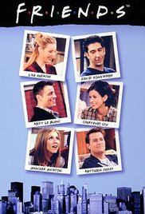

1. Fast and Furious 8
Genre: Action, Adventure, Crime Release date: 13 April 2017 Short description: It is 2h 16min movie, designed for 12+ Director: F. Gary Gray Writers: Chris Morgan, Gary Scott Thompson (based on characters created by) Stars: Vin Diesel, Jason Statham, Dwayne Johnson
Click on the picture to get more info!!!
2. Friends
Genre: Comedy, Romance Release date: (1994-2004) Short description: It is a combinations of 10 seasons, which each contains 24 episodes. Creators: David Crane, Marta Kauffman Stars: Jennifer Aniston, Courteney Cox, Lisa Kudrow, Matt LeBlanc, Matthew Perry, David Schwimmer
Click on the picture to get more info!!!
3. Jumper
Genre: Action, Adventure, Sci-Fi Release date: 14 February 2008 (Russia) Director: Doug Liman Short description: A teenager with teleportation abilities suddenly finds himself in
the middle of an ancient war between those like him and their sworn annihilators. Writers: David S. Goyer (screenplay), Jim Uhls (screenplay) | 2 more credits » Stars: Hayden Christensen, Samuel L. Jackson, Jamie Bell

Click on the picture to get more info!!!
s4. 8 mile
Genre: Drama, Music Release date: 8 November 2002 (USA) Director: Curtis Hanson Short description: A young rapper, struggling with every aspect of his life, wants to
make it big but his friends and foes make this odyssey of rap harder than it may seem. Writer: Scott Silver Stars: Eminem, Brittany Murphy, Kim Basinger
Click on the picture to get more info!!!